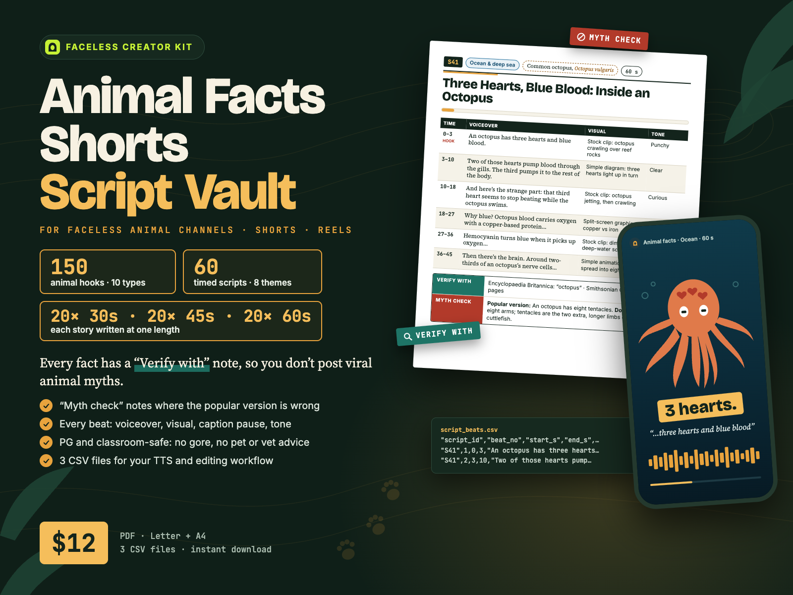
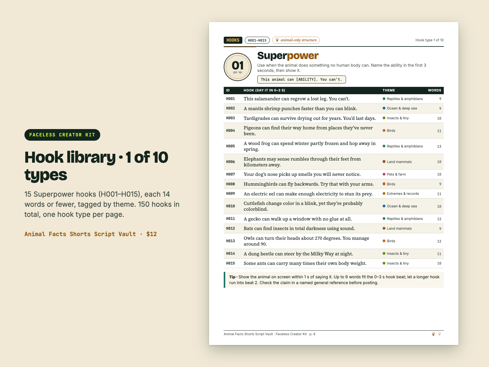
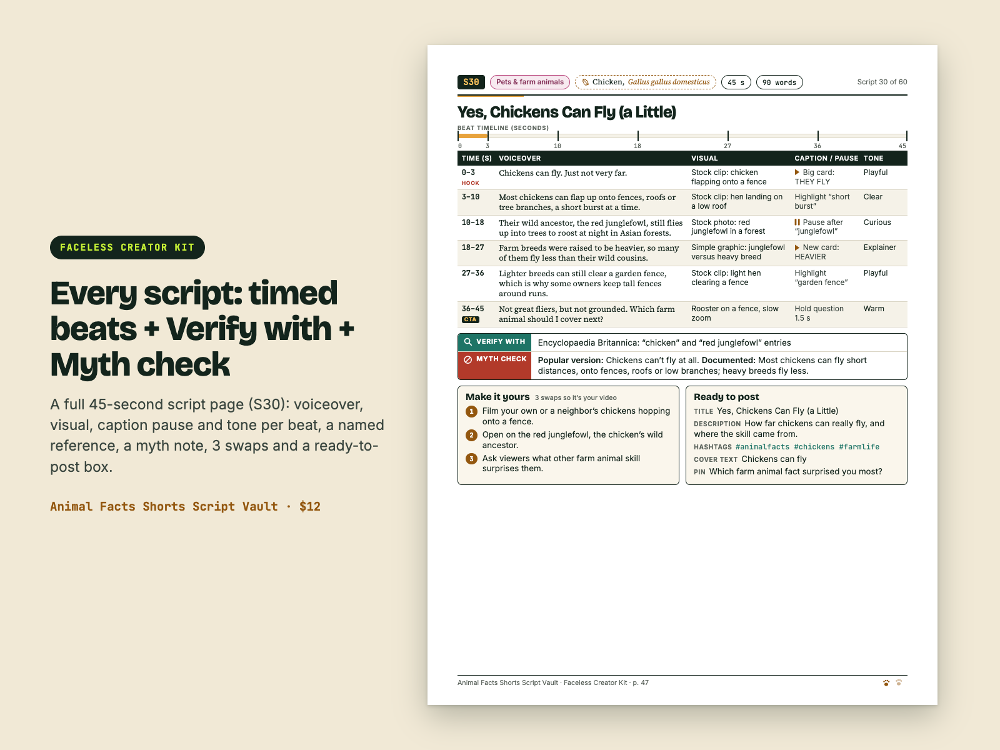
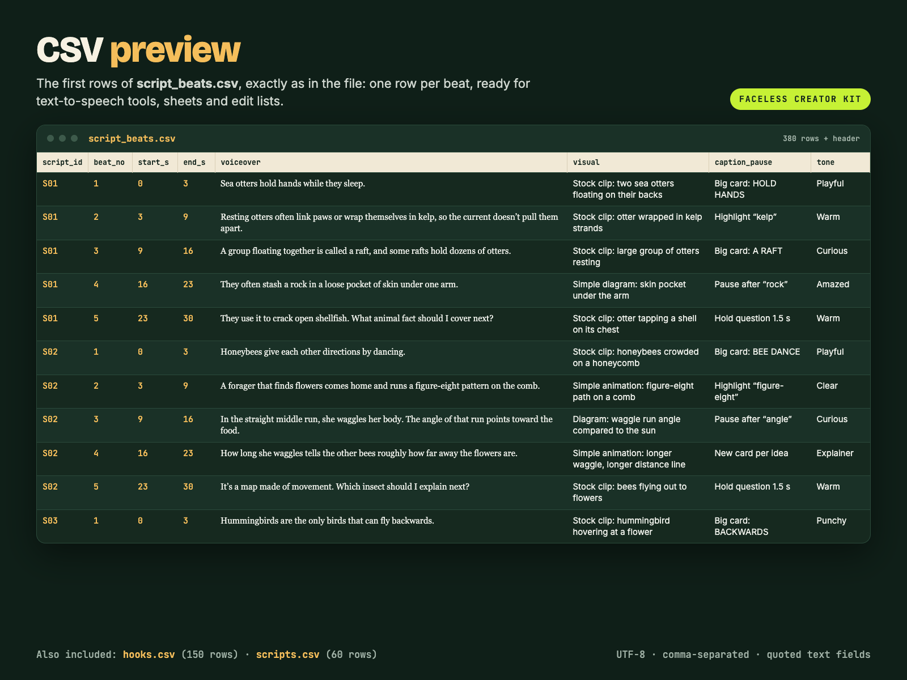

150 animal-facts hooks + 60 timed, source-pointed Shorts scripts — every fact has a “Verify with” note so you don't post viral animal myths.
An animal-facts-only script library for faceless Shorts, Reels and TikTok: 60 finished scripts timed beat by beat for 30, 45 or 60 seconds, each with a named reference to check it against and a Myth check line. 80-page PDF (US Letter + A4) + 3 CSV files. From Faceless Creator Kit, the creator-tools imprint of Hustle Studio.

$12.00 USD, $12 one-time, instant download (about $0.20 per script)
Buy now: $12 See 2 full script pages first🔒 Secure checkout. Payment is handled by Waffo Pancake, our merchant of record, which processes the payment and the sales tax and accepts common debit and credit cards. Waffo sends you the receipt; we never see your card details. Right after payment you go straight to the download page.
↩️ 14-day refund, no questions asked. Email chenphien@gmail.com within 14 days of purchase and we refund you in full through Waffo Pancake (see Terms).
✅ Satisfaction guarantee + free corrections. Found a fact that doesn't match its own “Verify with” reference? Send us the script ID. We check it, and if the script is wrong we put a corrected version on the same download page, free for every buyer. You can still take the 14-day refund.
✉️ Real support. One email address, answered by the people who made the vault, within 2 business days.
🆕 New shop, honest about it. This vault is new, so it has no reviews yet, and we won't invent any. Instead: below you can read a complete 30-second script, a complete 60-second script and a full hook page as text, word for word from the paid files; every image is a real PDF page or a real view of the CSV; and all 60 script titles are listed further down.
We are not zoologists or biologists, and no outside expert has reviewed the scripts. Here is what we did instead, so you can judge it yourself:
Please still check each fact against its reference before you post.



Vertical screen recording of the real pages: cover, a hook page, a script page and the CSV table.
S01Ocean & deep seaSea otter, Enhydra lutris30 s67 words
| Time (s) | Voiceover | Visual | Caption / pause | Tone |
|---|---|---|---|---|
| 0–3 (hook) | Sea otters hold hands while they sleep. | Stock clip: two sea otters floating on their backs | Big card: HOLD HANDS | Playful |
| 3–9 | Resting otters often link paws or wrap themselves in kelp, so the current doesn’t pull them apart. | Stock clip: otter wrapped in kelp strands | Highlight “kelp” | Warm |
| 9–16 | A group floating together is called a raft, and some rafts hold dozens of otters. | Stock clip: large group of otters resting | Big card: A RAFT | Curious |
| 16–23 | They often stash a rock in a loose pocket of skin under one arm. | Simple diagram: skin pocket under the arm | Pause after “rock” | Amazed |
| 23–30 (CTA) | They use it to crack open shellfish. What animal fact should I cover next? | Stock clip: otter tapping a shell on its chest | Hold question 1.5 s | Warm |
Verify with: Monterey Bay Aquarium: animal page “sea otter” · Encyclopaedia Britannica: “sea otter”
Myth check: No common myth.
Make it yours: 1) Open on the rock pocket instead, then reveal the hand-holding. 2) Use a map of the sea otter’s Pacific range as the main visual. 3) Ask viewers which animal they think sleeps in the strangest way.
Ready to post: Title: Why Sea Otters Hold Hands While They Sleep · Description: Why sea otters link paws and carry a rock under one arm. · Hashtags: #animalfacts #seaotter #oceanlife · Cover text: They hold hands! · Pin: What animal fact should I cover next?
S41Ocean & deep seaCommon octopus, Octopus vulgaris60 s129 words
| Time (s) | Voiceover | Visual | Caption / pause | Tone |
|---|---|---|---|---|
| 0–3 (hook) | An octopus has three hearts and blue blood. | Stock clip: octopus crawling over reef rocks | Big card: 3 HEARTS | Punchy |
| 3–10 | Two of those hearts pump blood through the gills. The third pumps it to the rest of the body. | Simple diagram: three hearts light up in turn | New card: label each heart | Clear |
| 10–18 | And here’s the strange part: that third heart seems to stop beating while the octopus swims. | Stock clip: octopus jetting, then crawling | Pause 0.5 s before “strange” | Curious |
| 18–27 | Why blue? Octopus blood carries oxygen with a copper-based protein called hemocyanin, not the iron-based one in ours. | Split-screen graphic: copper vs iron | Highlight “hemocyanin” | Explainer |
| 27–36 | Hemocyanin turns blue when it picks up oxygen, and it works well in cold water with little oxygen. | Stock clip: dim, cold deep-water scene | New card per clause | Calm |
| 36–45 | Then there’s the brain. Around two-thirds of an octopus’s nerve cells sit in its arms, not its head. | Simple animation: dots spread into eight arms | Pause after “brain” | Wow, slower |
| 45–54 | And those are arms, not tentacles. Octopuses have eight arms. Squid and cuttlefish have arms plus two longer tentacles. | Side-by-side drawing: octopus vs squid | Tag “ARMS” / “TENTACLES” | Myth-buster |
| 54–60 (CTA) | Three hearts, blue blood, eight arms. Which ocean animal should I explain next? | Freeze on octopus close-up | Hold last card 1.5 s | Warm, direct |
Verify with: Encyclopaedia Britannica: “octopus” · Smithsonian Ocean: cephalopod pages
Myth check: Popular version: An octopus has eight tentacles. Documented: It has eight arms; tentacles are the two extra, longer limbs of squid and cuttlefish.
Make it yours: 1) Open on the arms-not-tentacles myth, then reveal the three hearts. 2) Swap the visuals: hand-drawn hearts on paper instead of a diagram. 3) Swap the CTA: ask viewers to guess the octopus’s heart count first.
Ready to post: Title: Three Hearts, Blue Blood: Inside an Octopus · Description: Why octopus blood is blue and its arms think. · Hashtags: #animalfacts #octopus #oceanlife · Cover text: 3 hearts. Blue blood. · Pin: Which ocean animal should I explain next?
| ID | Hook (say it in 0–3 s) | Theme | Words |
|---|---|---|---|
| H121 | You’ve heard goldfish have three-second memories. Here’s the truth. | Pets & farm animals | 9 |
| H122 | You’ve heard bulls hate the color red. They’re reacting to movement. | Pets & farm animals | 11 |
| H123 | Ostriches don’t bury their heads in sand. Here’s what they’re actually doing. | Birds | 12 |
| H124 | Bats aren’t blind. Many see well and also use sound. | Land mammals | 10 |
| H125 | Harvestmen, the daddy longlegs, aren’t spiders and have no venom. | Insects & tiny creatures | 10 |
| H126 | Chameleons don’t change color to match the background. Here’s why they do. | Reptiles & amphibians | 12 |
| H127 | Lemmings don’t leap off cliffs in mass suicide. | Land mammals | 8 |
| H128 | Owls can’t spin their heads all the way around. | Birds | 9 |
| H129 | Camels don’t store water in their humps. It’s fat. | Land mammals | 9 |
| H130 | Elephants don’t drink through their trunks like straws. | Land mammals | 8 |
| H131 | Dogs don’t see only in black and white. | Pets & farm animals | 8 |
| H132 | Pigs aren’t dirty. Mud is how they stay cool. | Pets & farm animals | 9 |
| H133 | Flamingos aren’t born pink. Their color comes from food. | Birds | 9 |
| H134 | Megalodon isn’t hiding in the deep sea. It’s been extinct for millions of years. | Extinct & prehistoric | 14 |
| H135 | Porcupines can’t shoot their quills. They only come loose on contact. | Land mammals | 11 |
H001, H016, H031, H046, H061, H076, H091, H106, H121, H136, copied word for word from the paid files. No email or signup.
Open the free sample| File | Format | Size / rows |
|---|---|---|
Animal-Facts-Script-Vault_Letter.pdf | PDF, US Letter | 80 pages |
Animal-Facts-Script-Vault_A4.pdf | PDF, A4 | 80 pages (same content and page numbers) |
hooks.csv | CSV, UTF-8 | 150 rows (hook_id, hook_type, theme, hook_text, word_count) |
scripts.csv | CSV, UTF-8 | 60 rows, one per script (species, full voiceover, verify_with, myth_check, 3 swaps, post fields, CTA) |
script_beats.csv | CSV, UTF-8 | 380 rows, one per beat (start/end seconds, voiceover, visual, caption / pause, tone) |
README.txt | Plain text | File list, CSV import steps for Google Sheets and Excel, license summary, verify-before-posting advice |
Animal-Facts-Script-Vault.zip | ZIP | All 6 files above in one download |
Inside each PDF: cover, clickable contents (2 pages), How to use, Accuracy & platform notes, 10 hook pages (one hook type per page, 150 hooks), script index (2 pages), 60 script pages, a 6-step video workflow, FAQ and license. The download page has a separate link for each of the 6 files and for the ZIP.
So you can judge the whole vault, not just the previews. Theme in brackets.
S01 Why Sea Otters Hold Hands While They Sleep (Ocean & deep sea) · S02 Honeybees Dance to Give Directions (Insects & tiny creatures) · S03 Hummingbirds Can Fly Backwards. Here’s How. (Birds) · S04 A Giraffe’s Neck Has the Same Bones as Yours (Land mammals) · S05 The Salamander That Can Regrow Its Legs (Reptiles & amphibians) · S06 The Goldfish Memory Myth, Explained (Pets & farm animals) · S07 Mammoths Were Alive When the Pyramids Rose (Extinct & prehistoric) · S08 How the Cheetah Became the Fastest Land Animal (Extremes & record breakers) · S09 Every Clownfish Starts Life as a Male (Ocean & deep sea) · S10 Tardigrades Are Tough, but Not Indestructible (Insects & tiny creatures) · S11 No, Ostriches Don’t Bury Their Heads in Sand (Birds) · S12 Bats Aren’t Blind: How They See and Hear (Land mammals) · S13 The Frog That Survives Winter Partly Frozen (Reptiles & amphibians) · S14 Cats Don’t Only Purr When They’re Happy (Pets & farm animals) · S15 The Dodo Wasn’t Too Dumb to Survive (Extinct & prehistoric) · S16 The Blue Whale: Biggest Animal Ever Known (Extremes & record breakers) · S17 The Mantis Shrimp Throws a Super-Fast Punch (Ocean & deep sea) · S18 This Beetle Navigates by the Milky Way (Insects & tiny creatures) · S19 Owls Can’t Spin Their Heads All the Way Around (Birds) · S20 Elephants Don’t Drink Through Their Trunks (Land mammals)
S21 Chameleons Don’t Change Color to Hide (Reptiles & amphibians) · S22 What Your Dog’s Nose Knows That You Don’t (Pets & farm animals) · S23 Megalodon Is Extinct. Here’s How We Know. (Extinct & prehistoric) · S24 The Shark That May Live for Centuries (Extremes & record breakers) · S25 Yes, Seahorses Are Fish, and Dads Give Birth (Ocean & deep sea) · S26 The Butterfly Trip That Takes Generations (Insects & tiny creatures) · S27 The Bird That Sees Two Summers Every Year (Birds) · S28 Why Wombats Make Cube-Shaped Poop (Land mammals) · S29 How Sand Temperature Picks a Turtle’s Sex (Reptiles & amphibians) · S30 Yes, Chickens Can Fly (a Little) (Pets & farm animals) · S31 The Saber-Toothed Cat Was No Tiger (Extinct & prehistoric) · S32 The Fastest Animal on Earth Is a Bird (Extremes & record breakers) · S33 The Jellyfish That Can Turn Back Its Clock (Ocean & deep sea) · S34 Leafcutter Ants Don’t Eat the Leaves They Carry (Insects & tiny creatures) · S35 The Bird That Copies Almost Any Sound (Birds) · S36 Sloths Aren’t Lazy. They’re Saving Energy. (Land mammals) · S37 Komodo Dragons Can Have Babies Without Males (Reptiles & amphibians) · S38 Horses Sleep Standing Up, but Not Always (Pets & farm animals) · S39 Billions of Passenger Pigeons, Then None (Extinct & prehistoric) · S40 The Smallest Bird in the World Weighs Less Than a Coin (Extremes & record breakers)
S41 Three Hearts, Blue Blood: Inside an Octopus (Ocean & deep sea) · S42 How Fireflies Make Light Without Heat (Insects & tiny creatures) · S43 Penguins Don’t Live at the North Pole (Birds) · S44 The Platypus Breaks Almost Every Mammal Rule (Land mammals) · S45 Poison Dart Frogs Get Their Poison From Food (Reptiles & amphibians) · S46 Pigs Aren’t Dirty. Mud Is Their Air Conditioner. (Pets & farm animals) · S47 T. Rex Lived Closer to You Than to Stegosaurus (Extinct & prehistoric) · S48 The Whale That May Live More Than 200 Years (Extremes & record breakers) · S49 The Deep-Sea Fish With a Built-In Fishing Light (Ocean & deep sea) · S50 The Cicadas That Wait 17 Years Underground (Insects & tiny creatures) · S51 The Crow That Makes Its Own Tools (Birds) · S52 A Kangaroo Starts Life the Size of a Jellybean (Land mammals) · S53 The Lizard That Can Run Across Water (Reptiles & amphibians) · S54 Why Goats Have Rectangular Pupils (Pets & farm animals) · S55 Pterosaurs Were Not Flying Dinosaurs (Extinct & prehistoric) · S56 The Animal With the Largest Brain on Earth (Extremes & record breakers) · S57 Dolphins Sleep With Half Their Brain Awake (Ocean & deep sea) · S58 Daddy Longlegs Aren’t Spiders or Deadly (Insects & tiny creatures) · S59 Flamingos Are Born Gray. Food Turns Them Pink. (Birds) · S60 Pandas Are Built Like Meat Eaters but Eat Bamboo (Land mammals)
Animal facts are one of the easiest faceless niches to start and one of the easiest to get wrong. The comments will tell you within the hour if your “fact” is a myth. This vault is built for that problem.
You get 150 animal hooks (10 hook types × 15 hooks, IDs H001–H150) and 60 complete scripts (S01–S60), each on its own page. Every script is timed beat by beat for 30, 45 or 60 seconds: what to say, what to show, where to pause and how to sound. Beat 1 is always a 0–3 s hook; the last beat is the payoff and a comment question.
Every script page names the species by common and scientific name. Under the beat table sit two lines that free AI script generators don't give you. Verify with names where to check the core fact. Myth check states the popular version and the documented version where they differ, or “No common myth.” Speeds, sizes and ages are hedged with “up to”, “about” or “around”.
Then each page gives you 3 “Make it yours” swaps, so your video isn't identical to anyone else's, and a “Ready to post” box with title, description, hashtags, cover text and a comment to pin.
The 8 themes: Ocean & deep sea; Insects & tiny creatures; Birds; Land mammals; Reptiles & amphibians; Pets & farm animals; Extinct & prehistoric; Extremes & record breakers. 60 different species, one script each, from sea otters and honeybees to bowhead whales, platypuses and Quetzalcoatlus. Everything is PG and classroom-safe: no gore or injury detail, no pet-care or vet advice, and no “touch or feed wildlife” tips.
Visual cues point to footage you can legally get: licensed stock wildlife clips, simple diagrams, range maps, scale graphics, simple animations or your own pet footage. They never point to TV documentaries or films.
Honesty note: the facts are written from widely documented natural history and our build process checked them for internal consistency, but we are not zoologists or biologists, and no outside expert reviewed the scripts. Check each fact against the named reference before posting.
Which themes are covered?
8 themes: Ocean & deep sea; Insects & tiny creatures; Birds; Land mammals; Reptiles & amphibians; Pets & farm animals; Extinct & prehistoric; Extremes & record breakers. Each has at least 7 scripts.
How many hooks are there?
150 hooks: 10 hook types × 15 hooks each (H001–H150). 8 of the 10 types are animal-only structures (Superpower to Deep & extinct); Myth busted and Record holder complete the set.
What is NOT covered?
Pet care, training, diet or vet/medical advice; hunting, fishing or pest-control how-to; graphic predation or injury detail; animal cruelty or “fail” content; cryptids or paranormal claims presented as fact; fictional talking-animal stories; non-English text.
Are the facts guaranteed?
No. They come from widely documented natural history, but we are not zoologists or biologists and no outside expert reviewed them. Check each fact against the named “Verify with” reference before posting. If you find a script that doesn't match its reference, tell us: we correct the files for every buyer, and you can still take the 14-day refund.
Will the files be updated?
We don't promise new volumes. Corrections are free: if we fix a script, the new version goes on the same download page. Bookmark it.
Why not just ask ChatGPT for animal scripts?
You can, but free AI writers can repeat popular animal myths with full confidence, and you'd have to fact-check and time every output yourself. Here each script is already timed beat by beat, names where to verify it and flags the common myth.
Can I add my own hooks?
Yes. hooks.csv is a plain spreadsheet you can extend with your own rows. There is no generator.
Does it batch-generate a week of scripts?
No. It is a library of 60 finished scripts, not a generator or an app. 60 scripts = 2 months at 1 per day, or 3 weeks at 3 per day.
Does the same story come in 30, 45 and 60 s versions?
No. Each story is written at one length only: 20 stories at 30 s, 20 at 45 s and 20 at 60 s. The longest script is 60 s.
Can I use it on a monetized channel? (license)
Yes, on your own channels. You can use the hooks and scripts, as written or edited, in your own videos and posts, for personal or commercial use. You can't resell, share or redistribute the pack, the PDFs or the CSVs, or publish the scripts or hooks as a script product (script pack, template, prompt pack, course or e-book).
How fast do you answer?
Email chenphien@gmail.com; we reply within 2 business days. Checkout runs through Waffo Pancake, our merchant of record. Right after payment you are sent to a download page on this site with a link for each file and the ZIP.
$12.00 USD, one-time
Buy now: $12🔒 Secure checkout by Waffo Pancake (merchant of record: it processes the payment and tax), common debit and credit cards accepted, instant download after payment. 14-day full refund, no questions asked.
Faceless Creator Kit / Hustle Studio is independent and not affiliated with any video platform, zoo, aquarium, museum, agency or publisher.